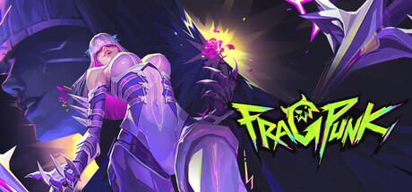

Fragpunk

FragPunk is a fast-paced 5v5 tactical shooter that blends precise gunplay with a unique rule-changing card system.
Pick your favorite Lancer, each bringing a distinct set of abilities that can support your team, gather intel, control space, or create openings for aggressive plays. Before each round, choose your loadout during the prep phase, selecting the weapons that best fit your strategy and the map ahead.
What makes FragPunk stand out is its Shard Card system. Every round, teams vote on powerful cards that can completely change how the game is played-altering movement, gravity, map layouts, weapon behavior, and much more. With hundreds of possible card effects, no two matches ever play out the same, keeping every round fresh and unpredictable.